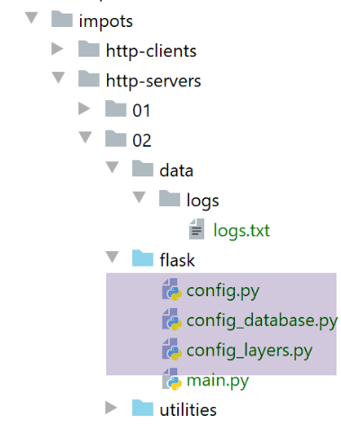
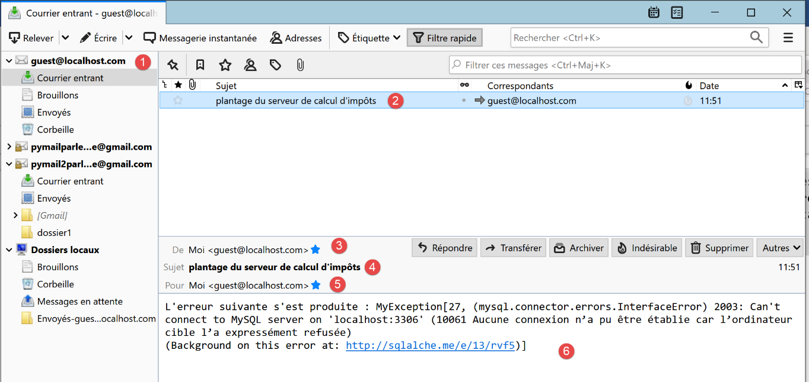

24. تمرين تطبيقي: الإصدار 7
24.1. مقدمة
الإصدار 7 من تطبيق حساب الضريبة مطابق للإصدار 6 باستثناء التفاصيل التالية:
- سيقوم عميل الويب بإطلاق عدة طلبات HTTP في وقت واحد. في الإصدار السابق، كانت هذه الطلبات تُطلق بالتتابع. ولم يكن الخادم يعالج سوى طلب واحد في كل مرة؛
- سيكون الخادم متعدد الخيوط: سيتمكن من معالجة عدة طلبات في وقت واحد؛
- لمتابعة تنفيذ هذه الطلبات، سيتم تزويد الخادم الويب بأداة تسجيل تُستخدم لتسجيل اللحظات المهمة في معالجة الطلبات في ملف نصي؛
- سيقوم الخادم بإرسال بريد إلكتروني إلى مسؤول التطبيق عندما يواجه مشكلة تمنعه من التشغيل، وعادةً ما تكون هذه المشكلة متعلقة بقاعدة البيانات المرتبطة بخادم الويب؛
لا تتغير بنية التطبيق:
هيكل النصوص البرمجية كما يلي:

يتم الحصول على المجلد [http-servers/02] أولاً عن طريق نسخ المجلد [http-servers/01]. ثم يتم إجراء تعديلات عليه.
24.2. الأدوات المساعدة

24.2.1. الفئة [Logger]
ستسمح الفئة [Logger] بتسجيل بعض إجراءات خادم الويب في ملف نصي:
import codecs
import threading
from datetime import date, datetime
from threading import current_thread
from ImpôtsError import ImpôtsError
class Logger:
# سمة الفئة
verrou = threading.RLock()
# منشئ
def __init__(self, logs_filename: str):
try:
# فتح الملف في وضع الإضافة (a)
self.__resource = codecs.open(logs_filename, "a", "utf-8")
except BaseException as erreur:
raise ImpôtsError(18, f"{erreur}")
# كتابة سجل
def write(self, message: str):
# التاريخ/الوقت الحالي
today = date.today()
now = datetime.time(datetime.now())
# اسم مؤشر الترابط
thread_name = current_thread().name
# لا نريد أن يتم مقاطعتنا أثناء الكتابة في ملف السجلات
# طلب كائن المزامنة (= القفل) للفئة - سيحصل عليه مؤشر ترابط واحد فقط
Logger.verrou.acquire()
try:
# كتابة السجل
self.__resource.write(f"{today} {now}, {thread_name} : {message}")
# الكتابة الفورية — وإلا فلن يُكتب النص إلا عند إغلاق تدفق الكتابة
# أو نريد تتبع السجلات بمرور الوقت
self.__resource.flush()
finally:
# نحرر كائن التزامن (= القفل) حتى يتمكن خيط آخر من الحصول عليه
Logger.verrou.release()
# تحرير الموارد
def close(self):
# إغلاق الملف
if self.__resource:
self.__resource.close()
- السطران 10-11: يتم تعريف سمة للفئة. سمة الفئة هي خاصية مشتركة بين جميع مثيلات الفئة. ويُشار إليها بالرمز [Classe.attribut_de_classe] (السطران 30 و39). سيكون سمة الفئة [verrou] كائنًا للتزامن لجميع الخيوط التي تنفذ كود الأسطر 31-36؛
- الأسطر 14-19: يتلقى المنشئ الاسم المطلق لملف السجلات. ثم يتم فتح هذا الملف وتخزين معرف الملف الذي تم استرداده في الفئة؛
- السطر 17: يتم فتح ملف السجلات في وضع «الإضافة» (a). وسيتم كتابة كل سطر في نهاية الملف؛
- الأسطر 22-39: تتيح الطريقة [write] كتابة رسالة تم تمريرها كمعلمة في ملف السجلات. وتُرفق بهذه الرسالة معلومتان:
- السطر 24: تاريخ اليوم؛
- السطر 25: الساعة الحالية؛
- السطر 27: اسم الخيط الذي يقوم بكتابة السجل. ولا ينبغي نسيان هنا أن تطبيق الويب يخدم عدة مستخدمين في آن واحد. يتم تخصيص خيط لكل طلب لتنفيذه. إذا تم إيقاف هذا الخيط مؤقتًا، عادةً لإجراء عملية إدخال/إخراج (الشبكة، الملفات، قاعدة البيانات)، فسيتم تخصيص المعالج لخيط آخر. بسبب هذه الانقطاعات المحتملة، لا يمكننا التأكد من أن خيطًا ما سينجح في كتابة سطر في ملف السجلات دون أن يتعرض للمقاطعة. وبالتالي، قد نرى سجلات خيطين مختلفين مختلطة معًا. هذا الخطر ضئيل، وربما معدوم تمامًا، لكننا قررنا مع ذلك توضيح كيفية مزامنة وصول خيطين إلى مورد مشترك، وهو في هذه الحالة ملف السجلات؛
- السطر 30: قبل الكتابة، يطلب الخيط مفتاح باب الدخول. المفتاح المطلوب هو الذي تم إنشاؤه في السطر 11. وهو فريد بالفعل: فسمة الفئة تكون فريدة لجميع مثيلات الفئة؛
- في الوقت T1، يحصل الخيط Thread1 على المفتاح. وبذلك يمكنه تنفيذ السطر 33؛
- في الوقت T2، يتم تعليق مؤشر الترابط Thread1 قبل أن ينتهي حتى من كتابة السجل؛
- في الوقت T3، يتعين على الخيط Thread2 الذي حصل على وحدة المعالجة المركزية أن يكتب سجلًا هو الآخر. فيصل إلى السطر 30 حيث يطلب مفتاح باب المدخل. ويُرد عليه بأن خيطًا آخر قد حصل عليه بالفعل. عندئذٍ يتم إيقافه مؤقتًا تلقائيًّا. وسيكون الأمر كذلك بالنسبة لجميع الخيوط التي تطلب هذا المفتاح؛
- في الوقت T4، يستعيد الخيط Thread1، الذي كان قد تم تعليقه، وحدة المعالجة المركزية. ثم ينهي كتابة السجل؛
- الأسطر 32-36: تتم عملية الكتابة في ملف السجلات على مرحلتين:
- السطر 33: يعمل موصِّف الملف الذي تم الحصول عليه في السطر 17 باستخدام مخزن مؤقت. تقوم العملية [write] في السطر 33 بالكتابة في هذا المخزن المؤقت وليس مباشرةً في الملف. ثم يتم تفريغ المخزن المؤقت في الملف في حالات معينة:
- عندما يمتلئ المخزن المؤقت؛
- خضوع موصِّف الملف لعملية [close] أو [flush]؛
- السطر 36: يتم فرض كتابة سطر السجل في الملف. نقوم بذلك لأننا نريد أن نرى سجلات الخيوط المختلفة تتخلل بعضها البعض. إذا لم نفعل ذلك، فستُكتب سجلات الخيط الواحد كلها في نفس الوقت عند إغلاق واصف الملف، السطر 45. وسيكون من الصعب جدًّا عندئذٍ ملاحظة أن بعض الخيوط قد توقفت: سيتعين النظر إلى التوقيتات في السجلات؛
- السطر 39: يقوم الخيط Thread1 بإرجاع المفتاح الذي تم منحه إياه. وسيكون من الممكن منحه لخيط آخر؛
- السطر 22: وبالتالي فإن الطريقة [write] متزامنة: حيث يكتب مؤشر ترابط واحد فقط في كل مرة في ملف السجلات. ويكمن مفتاح الآلية في السطر 30: مهما حدث، فإن مؤشر ترابط واحد فقط هو الذي يحصل على مفتاح الانتقال إلى السطر التالي. ويحتفظ به إلى أن يعيده (السطر 39)؛
- الأسطر 41-45: تسمح الطريقة [close] بتحرير الموارد المخصصة لمؤشر ملف السجلات؛
ستكون السجلات المكتوبة في ملف السجلات على النحو التالي:
24.2.2. الفئة [SendAdminMail]
تسمح الفئة [SendAminMail] بإرسال رسالة إلى مسؤول التطبيق عند «تعطل» التطبيق.

يتم تكوين الفئة [SendAdminMail] في البرنامج النصي [config] [2] بالطريقة التالية:
# تكوين الخادم SMTP
"adminMail": {
# الخادم SMTP
"smtp-server": "localhost",
# منفذ الخادم SMTP
"smtp-port": "25",
# المسؤول
"from": "guest@localhost.com",
"to": "guest@localhost.com",
# موضوع البريد الإلكتروني
"subject": "plantage du serveur de calcul d'impôts",
# تُعيَّن قيمة tls إلى True إذا كان الخادم SMTP يتطلب مصادقة، وإلى False في حالة عدم الحاجة إلى ذلك
"tls": False
}
تتلقى الفئة [SendAdminMail] قاموس الأسطر 2-13 بالإضافة إلى إعدادات إرسال البريد الإلكتروني. وتكون الفئة كما يلي:
# عمليات الاستيراد
import smtplib
from email.mime.text import MIMEText
from email.utils import formatdate
class SendAdminMail:
# -----------------------------------------------------------------------
@staticmethod
def send(config: dict, message: str, verbose: bool = False):
# يرسل رسالة إلى خادم SMTP config['smtp-server'] على المنفذ config[smtp-port]
# إذا كان config['tls'] صحيحًا، فسيتم استخدام دعم TLS
# يتم إرسال البريد الإلكتروني نيابة عن config['from']
# إلى المستلم config['to']
# عنوان الرسالة هو config['subject']
# يوجد مرجع لمسجل في config['logger']
# يتم استرداد أداة التسجيل من ملف التكوين - قد تكون قيمتها «None»
logger = config["logger"]
# الخادم SMTP
server = None
# يتم إرسال الرسالة
try:
# الخادم SMTP
server = smtplib.SMTP(config["smtp-server"])
# وضع التفصيل
server.set_debuglevel(verbose)
# اتصال آمن؟
if config['tls']:
# بدء حوار الأمان
server.starttls()
# المصادقة
server.login(config["user"], config["password"])
# إنشاء رسالة متعددة الأجزاء - هذه هي الرسالة التي سيتم إرسالها
msg = MIMEText(message)
msg['From'] = config["from"]
msg['To'] = config["to"]
msg['Date'] = formatdate(localtime=True)
msg['Subject'] = config["subject"]
# إرسال الرسالة
server.send_message(msg)
# السجل - قد لا يكون المسجل موجودًا
if logger:
logger.write(f"[SendAdminMail] Message envoyé à [{config['to']}] : [{message}]\n")
except BaseException as erreur:
# السجل - قد لا يكون المسجل موجودًا
if logger:
logger.write(
f"[SendAdminMail] Erreur [{erreur}] lors de l'envoi à [{config['to']}] du message [{message}] : \n")
finally:
# انتهينا - يتم تحرير الموارد التي استخدمتها الدالة
if server:
server.quit()
- الأسطر 24-54: نجد الكود الذي سبق دراسته في المثال |smtp/02|؛
- السطر 20: يتم استرداد مرجع مسجل. ويُستخدم هذا المرجع في السطرين 45 و49؛
24.3. خادم الويب

24.3.1. التكوين

تشبه إعدادات الخادم إلى حد كبير إعدادات الخادم الذي تمت دراسته سابقًا. ولم يتغير سوى الملف [config.py] بشكل طفيف:
def configure(config: dict) -> dict:
import os
# الخطوة 1 ------
# مجلد هذا الملف
script_dir = os.path.dirname(os.path.abspath(__file__))
# المسار الجذري
root_dir = "C:/Data/st-2020/dev/python/cours-2020/python3-flask-2020"
# التبعيات المطلقة
absolute_dependencies = [
# مجلدات المشروع
# BaseEntity، MyException
f"{root_dir}/classes/02/entities",
# InterfaceImpôtsDao، InterfaceImpôtsMétier، InterfaceImpôtsUi
f"{root_dir}/impots/v04/interfaces",
# AbstractImpôtsdao، ImpôtsConsole، ImpôtsMétier
f"{root_dir}/impots/v04/services",
# ImpotsDaoWithAdminDataInDatabase
f"{root_dir}/impots/v05/services",
# AdminData، ImpôtsError، TaxPayer
f"{root_dir}/impots/v04/entities",
# الثوابت، الشرائح
f"{root_dir}/impots/v05/entities",
# IndexController
f"{root_dir}/impots/http-servers/01/controllers",
# نصوص برمجية [config_database, config_layers]
script_dir,
# مسجل، SendAdminMail
f"{script_dir}/../utilities",
]
# تحديد مسار النظام
from myutils import set_syspath
set_syspath(absolute_dependencies)
# الخطوة 2 ------
# تكوين التطبيق
config.update({
# المستخدمون المصرح لهم باستخدام التطبيق
"users": [
{
"login": "admin",
"password": "admin"
}
],
# ملف السجلات
"logsFilename": f"{script_dir}/../data/logs/logs.txt",
# تكوين الخادم SMTP
"adminMail": {
# خادم SMTP
"smtp-server": "localhost",
# منفذ خادم SMTP
"smtp-port": "25",
# المسؤول
"from": "guest@localhost.com",
"to": "guest@localhost.com",
# موضوع البريد الإلكتروني
"subject": "plantage du serveur de calcul d'impôts",
# تعيين tls إلى True إذا كان الخادم SMTP يتطلب مصادقة، وإلى False في حالة عدم الحاجة إلى ذلك
"tls": False
},
# مدة توقف الخيط بالثواني
"sleep_time": 0
})
# الخطوة 3 ------
# تكوين قاعدة البيانات
import config_database
config["database"] = config_database.configure(config)
# الخطوة 4 ------
# إنشاء مثيلات طبقات التطبيق
import config_layers
config['layers'] = config_layers.configure(config)
# تقديم التكوين
return config
- الأسطر 40-66: نضيف إلى قاموس تكوين الخادم العناصر المتعلقة بمسجل الأحداث (السطر 49) وتلك المتعلقة بإرسال بريد إلكتروني تنبيهي إلى مسؤول التطبيق (الأسطر 51-63)؛
- السطر 65: لرؤية سلاسل العمليات (threads) أثناء العمل بشكل أفضل، سنقوم بإيقاف بعضها. [sleep_time] هي مدة الإيقاف معبَّر عنها بالثواني؛
- السطران 27-28: تجدر الإشارة إلى أننا نستخدم وحدة التحكم [index_controller] من الإصدار 6 السابق؛
24.3.2. النص البرمجي الرئيسي [main]
النص البرمجي الرئيسي [main] هو كما يلي:
# في انتظار معلمة mysql أو pgres
import sys
syntaxe = f"{sys.argv[0]} mysql / pgres"
erreur = len(sys.argv) != 2
if not erreur:
sgbd = sys.argv[1].lower()
erreur = sgbd != "mysql" and sgbd != "pgres"
if erreur:
print(f"syntaxe : {syntaxe}")
sys.exit()
# يتم تكوين التطبيق
import config
config = config.configure({'sgbd': sgbd})
# التبعيات
from flask import request, Flask
from flask_httpauth import HTTPBasicAuth
import json
import index_controller
from flask_api import status
from SendAdminMail import SendAdminMail
from myutils import json_response
from Logger import Logger
import threading
import time
from random import randint
from ImpôtsError import ImpôtsError
# مدير المصادقة
auth = HTTPBasicAuth()
@auth.verify_password
def verify_password(login, password):
# قائمة المستخدمين
users = config['users']
# يتم تصفح هذه القائمة
for user in users:
if user['login'] == login and user['password'] == password:
return True
# لم يتم العثور على
return False
# إرسال بريد إلكتروني إلى المسؤول
def send_adminmail(config: dict, message: str):
# إرسال بريد إلكتروني إلى مسؤول التطبيق
config_mail = config["adminMail"]
config_mail["logger"] = config['logger']
SendAdminMail.send(config_mail, message)
# التحقق من ملف السجلات
logger = None
erreur = False
message_erreur = None
try:
# مسجل السجلات
logger = Logger(config["logsFilename"])
except BaseException as exception:
# سجل وحدة التحكم
print(f"L'erreur suivante s'est produite : {exception}")
# تدوين الخطأ
erreur = True
message_erreur = f"{exception}"
# يتم حفظ مسجل السجلات في ملف التكوين
config['logger'] = logger
# معالجة الخطأ
if erreur:
# إرسال بريد إلكتروني إلى المسؤول
send_adminmail(config, message_erreur)
# إنهاء التطبيق
sys.exit(1)
# سجل بدء التشغيل
log = "[serveur] démarrage du serveur"
logger.write(f"{log}\n")
print(log)
# استرداد البيانات من مصلحة الضرائب
erreur = False
try:
# ستكون «admindata» بيانات على نطاق التطبيق للقراءة فقط
config["admindata"] = config["layers"]["dao"].get_admindata()
# سجل النجاح
logger.write("[serveur] connexion à la base de données réussie\n")
except ImpôtsError as ex:
# تم تسجيل الخطأ
erreur = True
# سجل الأخطاء
log = f"L'erreur suivante s'est produite : {ex}"
# وحدة التحكم
print(log)
# ملف السجلات
logger.write(f"{log}\n")
# رسالة بريد إلكتروني إلى المسؤول
send_adminmail(config, log)
# لم يعد الخيط الرئيسي بحاجة إلى مسجل السجلات
logger.close()
# في حالة حدوث خطأ، يتم إيقاف التشغيل
if erreur:
sys.exit(2)
# يمكن تشغيل تطبيق Flask
app = Flask(__name__)
# الصفحة الرئيسية URL
@app.route('/', methods=['GET'])
@auth.login_required
def index():
…
# main فقط
if __name__ == '__main__':
# يتم تشغيل الخادم
app.config.update(ENV="development", DEBUG=True)
app.run(threaded=True)
- الأسطر 1-10: ينتظر البرنامج النصي معلمة [mysql / pgres] التي تحدد له البرنامج النصي SGBD الذي يجب استخدامه؛
- الأسطر 12-14: يتم تكوين التطبيق (مسار Python، الطبقات، قاعدة البيانات)؛
- الأسطر 16-28: التبعيات اللازمة للتطبيق؛
- الأسطر 30-43: إدارة المصادقة؛
- الأسطر 46-51: دالة ترسل بريدًا إلكترونيًا إلى مسؤول التطبيق؛
- تتوقع الدالة معلمتين:
- config: قاموس يحتوي على المفاتيح [adminMail] و [logger]؛
- الرسالة المراد إرسالها؛
- الأسطر 49-50: يتم إعداد إعدادات الإرسال؛
- يتم إرسال البريد الإلكتروني؛
- الأسطر 54-74: يتم التحقق من وجود ملف السجلات؛
- السطر 70-74: إذا لم نتمكن من فتح ملف السجلات، نرسل بريدًا إلكترونيًا إلى المسؤول ونوقف العملية؛
- الأسطر 76-79: يتم تسجيل بدء تشغيل الخادم؛
- الأسطر 81-98: يتم استرداد بيانات مصلحة الضرائب من قاعدة البيانات؛
- الأسطر 88-98: إذا لم نتمكن من الحصول على هذه البيانات، يتم تسجيل الخطأ في كل من وحدة التحكم وملف السجلات؛
- الأسطر 100-101: لن يقوم الخيط الرئيسي بتسجيل أي سجلات بعد الآن (لن تستخدم الخيوط التي تم إنشاؤها نفس معرف الملف)؛
- الأسطر 103-105: إذا تعذر الاتصال بقاعدة البيانات، يتم إيقاف العملية؛
- السطر 122: يتم تشغيل الخادم في الوضع متعدد الخيوط؛
الدالة [index] (السطر 114) هي كما يلي:
# الصفحة الرئيسية URL
@app.route('/', methods=['GET'])
@auth.login_required
def index():
logger = None
try:
# مسجل
logger = Logger(config["logsFilename"])
# يتم تخزينه في ملف تكوين مرتبط بالخيط
thread_config = {"logger": logger}
thread_name = threading.current_thread().name
config[thread_name] = {"config": thread_config}
# يتم تسجيل الطلب
logger.write(f"[index] requête : {request}\n")
# يتم إيقاف الخيط إذا طُلب ذلك
sleep_time = config["sleep_time"]
if sleep_time != 0:
# يكون التوقف عشوائيًا بحيث يتم إيقاف بعض الخيوط دون غيرها
aléa = randint(0, 1)
if aléa == 1:
# تسجيل قبل التوقف المؤقت
logger.write(f"[index] mis en pause du thread pendant {sleep_time} seconde(s)\n")
# التوقف المؤقت
time.sleep(sleep_time)
# يتم تنفيذ الطلب بواسطة وحدة تحكم
résultat, status_code = index_controller.execute(request, config)
# هل حدث خطأ فادح؟
if status_code == status.HTTP_500_INTERNAL_SERVER_ERROR:
# يتم إرسال بريد إلكتروني إلى مسؤول التطبيق
config_mail = config["adminMail"]
config_mail["logger"] = logger
SendAdminMail.send(config_mail, json.dumps(résultat, ensure_ascii=False))
# يتم تسجيل الرد
logger.write(f"[index] {résultat}\n")
# يتم إرسال الرد
return json_response(résultat, status_code)
except BaseException as erreur:
# يتم تسجيل الخطأ في السجل إن أمكن
if logger:
logger.write(f"[index] {erreur}")
# يتم إعداد الرد للعميل
résultat = {"réponse": {"erreurs": [f"{erreur}"]}}
# إرسال الرد
return json_response(résultat, status.HTTP_500_INTERNAL_SERVER_ERROR)
finally:
# يتم إغلاق ملف السجلات إذا كان مفتوحًا
if logger:
logger.close()
- السطر 4: الدالة التي يتم تنفيذها عندما يطلب المستخدم URL /. ونظرًا لأن الخادم متعدد الخيوط (السطر 112)، فسيتم إنشاء خيط لتنفيذ الدالة. ويمكن مقاطعة هذا الخيط في أي وقت وإيقافه مؤقتًا لاستئناف تنفيذه لاحقًا. يجب دائمًا تذكر هذه النقطة عندما يصل الكود إلى مورد مشترك بين جميع الخيوط. هذا المورد هنا هو ملف السجلات: حيث تكتب جميع الخيوط فيه؛
- السطر 8: يتم إنشاء مثيل لـ«logueur». وبالتالي سيكون لكل خيط مثيل مختلف من «logueur». ومع ذلك، فإن جميع هذه المثيلات تشير إلى ملف السجلات نفسه. ومن المهم مع ذلك ملاحظة أنه عندما يغلق خيط ما مثيل «logueur» الخاص به، فإن ذلك لا يؤثر على مثيلات «logueur» الخاصة بالخيوط الأخرى؛
- الأسطر 9-12: يتم تخزين مسجل السجلات في قاموس التطبيق [config] المرتبط بمفتاح يحمل اسم الخيط. وبالتالي، إذا كان هناك n خيوط يتم تنفيذها في وقت واحد، فسيتم إنشاء n إدخالات في القاموس [config]. ويُعد [config] موردًا مشتركًا بين جميع الخيوط. ولذلك قد تكون هناك حاجة إلى التزامن. وقد وضعت هنا فرضية. افترضت أنه إذا قام خيطان في نفس الوقت بإنشاء مدخلهما في الملف [config]، وتم مقاطعة أحدهما من قبل الآخر، فإن ذلك لن يكون له أي تأثير. فالخيط الذي تمت مقاطعته يمكنه لاحقًا إكمال إنشاء المدخل. إذا أظهرت التجربة أن هذه الفرضية خاطئة، فسيكون من الضروري مزامنة الوصول إلى السطر 12؛
- السطر 10: نضع مسجل السجلات في قاموس؛
- السطر 11: [threading.current_thread()] هو الخيط الذي ينفذ هذا السطر، وبالتالي الخيط الذي ينفذ الدالة [index]. نسجل اسمه. لكل خيط اسم فريد؛
- السطر 12: يتم حفظ تكوين الخيط. من الآن فصاعدًا، سنعمل دائمًا على النحو التالي: إذا كانت هناك معلومات لا يمكن مشاركتها بين الخيوط، فسيتم وضعها مع ذلك في التكوين العام، ولكن مرتبطة باسم الخيط؛
- السطر 14: يتم تسجيل الطلب الذي يتم تنفيذه حاليًا؛
- الأسطر 15-24: يتم إيقاف بعض الخيوط بشكل عشوائي مؤقتًا حتى تفسح المجال للمعالج لخيط آخر؛
- السطر 16: يتم استرداد مدة التوقف (بالثواني) من الإعدادات؛
- السطر 17: لا يتم التعليق إلا إذا كانت مدة التعليق غير صفرية؛
- السطر 19: عدد صحيح عشوائي في النطاق [0, 1]. وبالتالي، فإن القيمتين 0 و1 هما الوحيدتان الممكنتان؛
- السطر 20: لا يتم إيقاف مؤقت الخيط إلا إذا كان العدد العشوائي هو 1؛
- السطر 22: يتم تسجيل حقيقة أن الخيط سيتم إيقافه؛
- السطر 24: يتم إيقاف الخيط لمدة [sleep_time] ثانية؛
- السطر 26: عندما يستيقظ الخيط، يقوم بتنفيذ الطلب بواسطة الوحدة النمطية [index_controller]؛
- الأسطر 28-32: إذا تسبب هذا التنفيذ في حدوث خطأ من النوع [500 INTERNAL SERVER ERROR]، يتم إرسال بريد إلكتروني إلى المسؤول؛
- السطران 30-31: يتم تكوين القاموس [config_mail] الذي سيتم تمريره إلى الفئة [SendAdminMail]؛
- السطر 32: الرسالة المرسلة إلى المسؤول هي السلسلة jSON من النتيجة التي سيتم إرسالها إلى العميل؛
- السطران 33-34: يتم تسجيل الرد الذي سيتم إرساله إلى العميل (السطر 36)؛
- الأسطر 37-44: معالجة أي استثناء محتمل؛
- السطران 39-40: إذا كان مسجل السجل موجودًا، يتم تسجيل الخطأ الذي حدث؛
- السطران 47-48: يتم إغلاق سجل الأخطاء إن وجد. في النهاية، يقوم الخيط بإنشاء سجل أخطاء في بداية الطلب وإغلاقه عند الانتهاء من معالجته؛
24.3.3. وحدة التحكم [index_controller]
وحدة التحكم [index_controller] التي تنفذ الطلبات هي نفسها المستخدمة في الإصدار السابق:

24.3.4. التنفيذ
يتم تشغيل خادم Flask، وخادم البريد الإلكتروني |hMailServer|، بالإضافة إلى برنامج قراءة البريد الإلكتروني |Thunderbird|. لا يتم تشغيل SGBD. يتوقف الخادم مع ظهور سجلات وحدة التحكم التالية:
C:\Data\st-2020\dev\python\cours-2020\python3-flask-2020\venv\Scripts\python.exe C:/Data/st-2020/dev/python/cours-2020/python3-flask-2020/impots/http-servers/02/flask/main.py mysql
[serveur] démarrage du serveur
L'erreur suivante s'est produite : MyException[27, (mysql.connector.errors.InterfaceError) 2003: Can't connect to MySQL server on 'localhost:3306' (10061 Aucune connexion n’a pu être établie car l’ordinateur cible l’a expressément refusée)
(Background on this error at: http://sqlalche.me/e/13/rvf5)]
Process finished with exit code 2
أما ملف السجلات [logs.txt] فهو كما يلي:
2020-07-23 11:51:38.324752, MainThread : [serveur] démarrage du serveur
2020-07-23 11:51:40.355510, MainThread : L'erreur suivante s'est produite : MyException[27, (mysql.connector.errors.InterfaceError) 2003: Can't connect to MySQL server on 'localhost:3306' (10061 Aucune connexion n’a pu être établie car l’ordinateur cible l’a expressément refusée)
(Background on this error at: http://sqlalche.me/e/13/rvf5)]
2020-07-23 11:51:42.464206, MainThread : [SendAdminMail] Message envoyé à [guest@localhost.com] : [L'erreur suivante s'est produite : MyException[27, (mysql.connector.errors.InterfaceError) 2003: Can't connect to MySQL server on 'localhost:3306' (10061 Aucune connexion n’a pu être établie car l’ordinateur cible l’a expressément refusée)
(Background on this error at: http://sqlalche.me/e/13/rvf5)]]
باستخدام Thunderbird، نتحقق من رسائل البريد الإلكتروني الخاصة بالمسؤول [guest@localhost.com]:

ثم نقوم بتشغيل SGBD ونطلب URL و[http://127.0.0.1:5000/?mari%C3%A9=oui&enfants=3&salaire=200000]. تصبح سجلات المحطة كما يلي:
2020-07-23 11:56:38.891753, MainThread : [serveur] démarrage du serveur
2020-07-23 11:56:38.987999, MainThread : [serveur] connexion à la base de données réussie
2020-07-23 11:56:40.586747, MainThread : [serveur] démarrage du serveur
2020-07-23 11:56:40.655254, MainThread : [serveur] connexion à la base de données réussie
2020-07-23 11:56:54.528360, Thread-2 : [index] requête : <Request 'http://127.0.0.1:5000/?متزوج=نعم&أطفال=3&الراتب=200000' [GET]>
2020-07-23 11:56:54.530653, Thread-2 : [index] {'réponse': {'result': {'marié': 'oui', 'enfants': 3, 'salaire': 200000, 'impôt': 42842, 'surcôte': 17283, 'taux': 0.41, 'décôte': 0, 'réduction': 0}}}
- الأسطر 1-4: نذكر أن هناك عمليتي تشغيل للخادم لأن الوضع [Debug=True] يتسبب في عملية تشغيل ثانية؛
- السطران 5-6: تمنحنا السجلات فكرة عن وقت تنفيذ الطلب، وهو هنا 2,293 مللي ثانية؛
24.4. عميل الويب

يتم الحصول على الملف [http-clients/02] عن طريق نسخ الملف [http-clients/01]. ثم يتم إجراء بعض التعديلات.
24.4.1. التكوين
تكوين [config] لتطبيق [http-clients/02] هو نفسه تكوين تطبيق [http-clients/01] باستثناء بعض التفاصيل:
def configure(config: dict) -> dict:
import os
# الخطوة 1 ------
# مجلد هذا الملف
script_dir = os.path.dirname(os.path.abspath(__file__))
# المسار الجذري
root_dir = "C:/Data/st-2020/dev/python/cours-2020/python3-flask-2020"
# التبعيات المطلقة
absolute_dependencies = [
# مجلدات المشروع
# BaseEntity، MyException
f"{root_dir}/classes/02/entities",
# InterfaceImpôtsDao، InterfaceImpôtsMétier، InterfaceImpôtsUi
f"{root_dir}/impots/v04/interfaces",
# AbstractImpôtsdao، ImpôtsConsole، ImpôtsMétier
f"{root_dir}/impots/v04/services",
# ImpotsDaoWithAdminDataInDatabase
f"{root_dir}/impots/v05/services",
# AdminData، ImpôtsError، TaxPayer
f"{root_dir}/impots/v04/entities",
# الثوابت، الشرائح
f"{root_dir}/impots/v05/entities",
# ImpôtsDaoWithHttpClient
f"{script_dir}/../services",
# نصوص التكوين
script_dir,
# مسجل
f"{root_dir}/impots/http-servers/02/utilities",
]
# تحديد مسار النظام
from myutils import set_syspath
set_syspath(absolute_dependencies)
# الخطوة 2 ------
# تكوين التطبيق باستخدام الثوابت
config.update({
# ملف دافعي الضرائب
"taxpayersFilename": f"{script_dir}/../data/input/taxpayersdata.txt",
# ملف النتائج
"resultsFilename": f"{script_dir}/../data/output/résultats.json",
# ملف الأخطاء
"errorsFilename": f"{script_dir}/../data/output/errors.txt",
# ملف السجلات
"logsFilename": f"{script_dir}/../data/logs/logs.txt",
# خادم حساب الضريبة
"server": {
"urlServer": "http://127.0.0.1:5000/",
"authBasic": True,
"user": {
"login": "admin",
"password": "admin"
}
},
# وضع التصحيح
"debug": True
}
)
# الخطوة 3 ------
# إنشاء مثيلات الطبقات
import config_layers
config['layers'] = config_layers.configure(config)
# تحديد التكوين
return config
- السطران 31-32: سنستخدم نفس أداة التسجيل |Logger| المستخدمة للخادم؛
- السطر 49: المسار المطلق لملف السجلات؛
- السطر 60: يُستخدم الوضع [debug=True] لتسجيل استجابات خادم الويب في ملف السجلات؛
24.4.2. الطبقة [dao]
يتغير كود الفئة [ImpôtsDaoWithHttpClient] بشكل طفيف:
# الاستيرادات
import requests
from flask_api import status
…
class ImpôtsDaoWithHttpClient(AbstractImpôtsDao, InterfaceImpôtsMétier):
# المنشئ
def __init__(self, config: dict):
# تهيئة الكائن الأصلي
AbstractImpôtsDao.__init__(self, config)
# تخزين عناصر التكوين
# التكوين العام
self.__config = config
# الخادم
self.__config_server = config["server"]
# وضع التصحيح
self.__debug = config["debug"]
# مسجل
self.__logger = None
# طريقة غير مستخدمة
def get_admindata(self) -> AdminData:
pass
# حساب الضريبة
def calculate_tax(self, taxpayer: TaxPayer, admindata: AdminData = None):
# السماح بترحيل الاستثناءات
…
# وضع التصحيح؟
if self.__debug:
# مسجل
if not self.__logger:
self.__logger = self.__config['logger']
# يتم التسجيل
self.__logger.write(f"{response.text}\n")
# رمز حالة الاستجابة HTTP
status_code = response.status_code
…
- السطر 17: يتم تخزين التكوين العام. سنرى لاحقًا أنه عند تنفيذ منشئ الفئة [ImpôtsDaoWithHttpClient]، لا يحتوي القاموس [config] بعد على المفتاح [logger] المستخدم في السطر 37. ولهذا السبب لا يمكن تهيئة [self.__logger] (السطر 23) في المنشئ؛
- السطر 21: تمت إضافة مفتاح [debug] في التكوين يتحكم في سجل الأسطر 33-39؛
- السطر 34: إذا كنا في وضع [debug]؛
- السطران 36-37: التهيئة المحتملة للخاصية [self.__logger]. عند استخدام الطريقة [calculate_tax]، يكون المفتاح [logger] جزءًا من القاموس [config]؛
- السطر 39: يتم تسجيل المستند النصي المرتبط بالاستجابة HTTP من الخادم؛
سيتم تنفيذ الطبقة [dao] في وقت واحد بواسطة عدة خيوط. لكن هنا يتم إنشاء نسخة واحدة فقط من هذه الطبقة (انظر config_layers). لذلك، يجب التحقق من أن الكود لا يتضمن الوصول للكتابة إلى البيانات المشتركة، وعادةً ما تكون خصائص الفئة [ImpôtsDaoWithHttpClient] التي تنفذ الطبقة [dao]. لكن في الأعلى، يقوم السطر 37 بتعديل إحدى خصائص مثيل الفئة. لا يترتب على ذلك أي عواقب هنا لأن جميع الخيوط تشترك في نفس أداة التسجيل. لو لم يكن الأمر كذلك، لكان من الضروري مزامنة الوصول إلى السطر 37.
24.4.3. النص البرمجي الرئيسي
يتطور البرنامج النصي الرئيسي [main] على النحو التالي:
# يتم تكوين التطبيق
import config
config = config.configure({})
# التبعيات
from ImpôtsError import ImpôtsError
import random
import sys
import threading
from Logger import Logger
# تنفيذ الطبقة [dao] في مؤشر ترابط
# «taxpayers» هي قائمة بالمكلفين
def thread_function(dao, logger, taxpayers: list):
…
# قائمة مؤشرات الترابط الخاصة بالعميل
threads = []
logger = None
# الكود
try:
# مسجل
logger = Logger(config["logsFilename"])
# يتم تخزينه في ملف التكوين
config["logger"] = logger
# يتم استرداد الطبقة [dao]
dao = config["layers"]["dao"]
# قراءة بيانات دافعي الضرائب
taxpayers = dao.get_taxpayers_data()["taxpayers"]
# المكلفين؟
if not taxpayers:
raise ImpôtsError(36, f"Pas de contribuables valides dans le fichier {config['taxpayersFilename']}")
# حساب ضريبة دافعي الضرائب باستخدام عدة خيوط
i = 0
l_taxpayers = len(taxpayers)
while i < len(taxpayers):
# سيعالج كل مؤشر ترابط من 1 إلى 4 دافعي ضرائب
nb_taxpayers = min(l_taxpayers - i, random.randint(1, 4))
# قائمة دافعي الضرائب الذين تمت معالجتهم بواسطة الخيط
thread_taxpayers = taxpayers[slice(i, i + nb_taxpayers)]
# يتم زيادة قيمة i للخيط التالي
i += nb_taxpayers
# يتم إنشاء الخيط
thread = threading.Thread(target=thread_function, args=(dao, logger, thread_taxpayers))
# يتم إضافته إلى قائمة الخيوط في البرنامج النصي الرئيسي
threads.append(thread)
# يتم تشغيل الخيط - هذه العملية غير متزامنة - لا يتم انتظار نتيجة الخيط
thread.start()
# يُنتظر انتهاء جميع الخيوط التي أطلقها الخيط الرئيسي
for thread in threads:
thread.join()
# هنا انتهت جميع الخيوط من عملها — قام كل منها بتعديل كائن واحد أو أكثر [taxpayer]
# يتم تسجيل النتائج في الملف jSON
dao.write_taxpayers_results(taxpayers)
except BaseException as erreur:
# عرض الخطأ
print(f"L'erreur suivante s'est produite : {erreur}")
finally:
# يتم إغلاق أداة التسجيل
if logger:
logger.close()
# انتهينا
print("Travail terminé...")
# إنهاء الخيوط التي قد تكون لا تزال موجودة في حالة التوقف بسبب خطأ
sys.exit()
- يختلف البرنامج النصي الرئيسي عن البرنامج النصي للعميل السابق في أنه سيقوم بإنشاء عدة خيوط تنفيذ لإجراء الاستعلامات إلى الخادم. كان العميل في الإصدار 6 يقوم بجميع استعلاماته بشكل متسلسل. لم يتم إرسال الطلب رقم i إلا بعد استلام الرد على الطلب رقم [i-1]. هنا نريد أن نرى كيف سيتصرف الخادم عند استلامه لعدة طلبات متزامنة. ولهذا الغرض نحتاج إلى خيوط التنفيذ؛
- السطر 21: سيتم وضع الخيوط التي تم إنشاؤها في قائمة. يجب أن نفهم أن البرنامج النصي [main] يتم تنفيذه أيضًا بواسطة خيط يُسمى [MainThread]. سيقوم هذا الخيط الرئيسي بإنشاء خيوط أخرى ستكون مسؤولة عن حساب ضريبة دافع ضرائب واحد أو أكثر؛
- السطر 26: يتم إنشاء سجل. وسيتم مشاركة هذا السجل بين جميع الخيوط؛
- السطر 32: يتم استرداد جميع دافعي الضرائب الذين يجب حساب ضرائبهم؛
- الأسطر 39-51: سيتم توزيع هؤلاء المكلفين على عدة خيوط؛
- السطران 40-41: سيتولى كل مؤشر ترابط معالجة ما بين 1 إلى 4 دافعي ضرائب. ويتم تحديد هذا العدد بشكل عشوائي؛
- يُنتج [random.randint(1, 4)] رقمًا عشوائيًا من القائمة [1, 2, 3, 4]؛
- لا يمكن أن يحتوي الخيط على أكثر من [l-i] دافع ضرائب، حيث يمثل [l-i] عدد دافعي الضرائب الذين لم يتم تخصيص خيط لهم بعد؛
- لذلك يتم أخذ القيمة الأدنى من بين القيمتين؛
- السطر 43: بمجرد معرفة [nb_taxpayers]، وهو عدد المكلفين الذين تمت معالجتهم بواسطة الخيط، يتم أخذ هؤلاء من قائمة المكلفين:
- [slice(10,12)] هي مجموعة المؤشرات [10, 11, 12]؛
- [response.text[39:]] هي القائمة [taxpayers[10]، taxpayers[11]، taxpayers[12]؛
- السطر 45: يتم زيادة قيمة i التي تتحكم في حلقة السطر 39؛
- السطر 47: يتم إنشاء مؤشر ترابط:
- تحدد [target=thread_function] الدالة التي سيقوم الخيط بتنفيذها. وهي الدالة الموجودة في السطرين 16-17. وتتطلب هذه الدالة ثلاثة معلمات؛
- [ags] هي قائمة المعلمات الثلاثة التي تتوقعها الدالة [thread_function]؛
إنشاء مؤشر ترابط لا يؤدي إلى تنفيذه. بل يؤدي فقط إلى إنشاء كائن؛
- السطران 48-49: يُضاف الخيط الذي تم إنشاؤه للتو إلى قائمة الخيوط التي أنشأها الخيط الرئيسي؛
- السطر 51: يتم تشغيل الخيط. وسيتم تنفيذه بالتوازي مع الخيوط النشطة الأخرى. هنا، سيقوم بتنفيذ الدالة [thread_function] بالمعلمات التي تم تزويده بها؛
- السطران 53-54: ينتظر الخيط الرئيسي انتهاء كل خيط من الخيوط التي أطلقها. لنأخذ مثالاً:
- أطلق الخيط الرئيسي ثلاثة خيوط [th1, th2, th3]؛
- يبدأ الخيط الرئيسي في انتظار كل خيط من الخيوط (السطران 53-54) حسب ترتيب حلقة for: [th1, th2, th3]؛
- لنفترض أن الخيوط تنتهي بالترتيب [th2, th1, th3]؛
- يانتظر الخيط الرئيسي انتهاء th1. وعندما ينتهي th2، لا يحدث شيء؛
- عندما ينتهي th1، يدخل الخيط الرئيسي في حالة انتظار th2. لكن هذا الأخير قد انتهى بالفعل. فينتقل الخيط الرئيسي عندئذٍ إلى الخيط التالي وينتظر th3؛
- عندما ينتهي th3، يكون الخيط الرئيسي قد أنهى انتظاره وينتقل عندئذٍ إلى تنفيذ السطر 57؛
- تقوم السطر 57 بكتابة النتائج التي تم الحصول عليها في ملف النتائج. لدينا هنا مثال جيد على مراجع الكائنات:
- السطر 43: تحتوي القائمة [thread_payers] المرتبطة بخيط على نسخ من مراجع الكائنات الموجودة في القائمة [taxpayers]؛
- من المعروف أن حساب الضريبة سيؤدي إلى تعديل الكائنات التي تشير إليها مراجع القائمة [thread_payers]. وسيتم إثراء هذه الكائنات بنتائج حساب الضريبة. ومع ذلك، فإن المراجع نفسها لا تتغير. وبالتالي، فإن المراجع الموجودة في القائمة الأولية [taxpayers] «ترى» أو «تشير إلى» الكائنات التي تم تعديلها؛
الوظيفة [thread_function] التي يتم تنفيذها بواسطة الخيوط هي التالية:
# تنفيذ الطبقة [dao] في مؤشر ترابط
# taxpayers هي قائمة بالمكلفين
def thread_function(dao, logger, taxpayers: list):
# سجل بداية مؤشر الترابط
thread_name = threading.current_thread().name
logger.write(f"début du thread [{thread_name}] avec {len(taxpayers)} contribuable(s)\n")
# يتم حساب ضريبة دافعي الضرائب
for taxpayer in taxpayers:
# سجل
logger.write(f"début du calcul de l'impôt de {taxpayer}\n")
# الحساب المتزامن للضريبة
dao.calculate_tax(taxpayer)
# سجل
logger.write(f"fin du calcul de l'impôt de {taxpayer}\n")
# سجل نهاية سلسلة العمليات
logger.write(f"fin du thread [{thread_name}]\n")
- غالبًا ما يكون كتابة الوظائف التي يتم تنفيذها في وقت واحد بواسطة عدة خيوط أمرًا دقيقًا: يجب دائمًا التحقق من أن الكود لا يحاول تعديل بيانات مشتركة بين الخيوط. وعندما يحدث هذا، يجب توفير وصول متزامن إلى البيانات المشتركة التي سيتم تعديلها؛
- السطر 3: تتلقى الدالة ثلاثة معلمات:
- [dao]: مرجع إلى الطبقة [dao]. هذه البيانات مشتركة؛
- [logger]: مرجع إلى أداة التسجيل. هذه البيانات مشتركة؛
- [taxpayers]: قائمة بالمكلفين. هذه البيانات غير مشتركة: كل مؤشر ترابط يدير قائمة مختلفة؛
- لنفحص المرجعين [dao, logger]:
- لقد رأينا أن الكائن الذي تشير إليه المرجع [dao] كان له مرجع [self.__logger] الذي تم تعديله بواسطة الخيوط، ولكن لوضع قيمة مشتركة بين جميع الخيوط؛
- تشير المرجعية [logger] إلى مُعَرِّف ملف. وقد رأينا أنه قد تحدث مشكلة عند كتابة السجلات في الملف. ولهذا السبب، تمت مزامنة عملية الكتابة في الملف؛
- السطران 5-6: يتم تسجيل اسم الخيط وعدد دافعي الضرائب الذين يتعين عليه إدارتهم؛
- الأسطر 8-14: حساب ضريبة دافعي الضرائب؛
- السطر 16: يتم تسجيل نهاية الخيط؛
24.4.4. التنفيذ
دعونا نُشغّل خادم الويب كما في الفقرة السابقة (خادم الويب، SGBD، hMailServer، Thunderbird)، ثم نُنفّذ البرنامج النصي [main] الخاص بالعميل. في الملفات [data/output/errors.txt, data/output/résultats.json]، نحصل على نفس النتائج التي حصلنا عليها في الإصدار السابق. في الملف [data/logs/logs.txt]، نحصل على السجلات التالية:
2020-07-24 10:05:20.942404, Thread-1 : début du thread [Thread-1] avec 1 contribuable(s)
2020-07-24 10:05:20.943458, Thread-1 : début du calcul de l'impôt de {"id": 1, "marié": "oui", "enfants": 2, "salaire": 55555}
2020-07-24 10:05:20.943458, Thread-2 : début du thread [Thread-2] avec 3 contribuable(s)
2020-07-24 10:05:20.946502, Thread-3 : début du thread [Thread-3] avec 1 contribuable(s)
2020-07-24 10:05:20.946502, Thread-2 : début du calcul de l'impôt de {"id": 2, "marié": "oui", "enfants": 2, "salaire": 50000}
2020-07-24 10:05:20.947003, Thread-3 : début du calcul de l'impôt de {"id": 5, "marié": "non", "enfants": 3, "salaire": 100000}
2020-07-24 10:05:20.947003, Thread-4 : début du thread [Thread-4] avec 3 contribuable(s)
2020-07-24 10:05:20.950324, Thread-4 : début du calcul de l'impôt de {"id": 6, "marié": "oui", "enfants": 3, "salaire": 100000}
2020-07-24 10:05:20.948449, Thread-5 : début du thread [Thread-5] avec 3 contribuable(s)
2020-07-24 10:05:20.953645, Thread-5 : début du calcul de l'impôt de {"id": 9, "marié": "oui", "enfants": 2, "salaire": 30000}
2020-07-24 10:05:20.976143, Thread-1 : {"réponse": {"result": {"marié": "oui", "enfants": 2, "salaire": 55555, "impôt": 2814, "surcôte": 0, "taux": 0.14, "décôte": 0, "réduction": 0}}}
2020-07-24 10:05:20.976695, Thread-1 : fin du calcul de l'impôt de {"id": 1, "marié": "oui", "enfants": 2, "salaire": 55555, "impôt": 2814, "surcôte": 0, "taux": 0.14, "décôte": 0, "réduction": 0}
2020-07-24 10:05:20.976695, Thread-1 : fin du thread [Thread-1]
2020-07-24 10:05:21.973914, Thread-2 : {"réponse": {"result": {"marié": "oui", "enfants": 2, "salaire": 50000, "impôt": 1384, "surcôte": 0, "taux": 0.14, "décôte": 384, "réduction": 347}}}
2020-07-24 10:05:21.973914, Thread-2 : fin du calcul de l'impôt de {"id": 2, "marié": "oui", "enfants": 2, "salaire": 50000, "impôt": 1384, "surcôte": 0, "taux": 0.14, "décôte": 384, "réduction": 347}
2020-07-24 10:05:21.973914, Thread-2 : début du calcul de l'impôt de {"id": 3, "marié": "oui", "enfants": 3, "salaire": 50000}
2020-07-24 10:05:21.977130, Thread-4 : {"réponse": {"result": {"marié": "oui", "enfants": 3, "salaire": 100000, "impôt": 9200, "surcôte": 2180, "taux": 0.3, "décôte": 0, "réduction": 0}}}
2020-07-24 10:05:21.977130, Thread-4 : fin du calcul de l'impôt de {"id": 6, "marié": "oui", "enfants": 3, "salaire": 100000, "impôt": 9200, "surcôte": 2180, "taux": 0.3, "décôte": 0, "réduction": 0}
2020-07-24 10:05:21.977130, Thread-4 : début du calcul de l'impôt de {"id": 7, "marié": "oui", "enfants": 5, "salaire": 100000}
2020-07-24 10:05:21.982634, Thread-3 : {"réponse": {"result": {"marié": "non", "enfants": 3, "salaire": 100000, "impôt": 16782, "surcôte": 7176, "taux": 0.41, "décôte": 0, "réduction": 0}}}
2020-07-24 10:05:21.982634, Thread-5 : {"réponse": {"result": {"marié": "oui", "enfants": 2, "salaire": 30000, "impôt": 0, "surcôte": 0, "taux": 0.0, "décôte": 0, "réduction": 0}}}
2020-07-24 10:05:21.983134, Thread-3 : fin du calcul de l'impôt de {"id": 5, "marié": "non", "enfants": 3, "salaire": 100000, "impôt": 16782, "surcôte": 7176, "taux": 0.41, "décôte": 0, "réduction": 0}
2020-07-24 10:05:21.983134, Thread-5 : fin du calcul de l'impôt de {"id": 9, "marié": "oui", "enfants": 2, "salaire": 30000, "impôt": 0, "surcôte": 0, "taux": 0.0, "décôte": 0, "réduction": 0}
2020-07-24 10:05:21.983134, Thread-3 : fin du thread [Thread-3]
2020-07-24 10:05:21.983763, Thread-5 : début du calcul de l'impôt de {"id": 10, "marié": "non", "enfants": 0, "salaire": 200000}
2020-07-24 10:05:22.008562, Thread-5 : {"réponse": {"result": {"marié": "non", "enfants": 0, "salaire": 200000, "impôt": 64210, "surcôte": 7498, "taux": 0.45, "décôte": 0, "réduction": 0}}}
2020-07-24 10:05:22.008562, Thread-5 : fin du calcul de l'impôt de {"id": 10, "marié": "non", "enfants": 0, "salaire": 200000, "impôt": 64210, "surcôte": 7498, "taux": 0.45, "décôte": 0, "réduction": 0}
2020-07-24 10:05:22.009062, Thread-5 : début du calcul de l'impôt de {"id": 11, "marié": "oui", "enfants": 3, "salaire": 200000}
2020-07-24 10:05:22.016848, Thread-5 : {"réponse": {"result": {"marié": "oui", "enfants": 3, "salaire": 200000, "impôt": 42842, "surcôte": 17283, "taux": 0.41, "décôte": 0, "réduction": 0}}}
2020-07-24 10:05:22.017349, Thread-5 : fin du calcul de l'impôt de {"id": 11, "marié": "oui", "enfants": 3, "salaire": 200000, "impôt": 42842, "surcôte": 17283, "taux": 0.41, "décôte": 0, "réduction": 0}
2020-07-24 10:05:22.017349, Thread-5 : fin du thread [Thread-5]
2020-07-24 10:05:23.008486, Thread-2 : {"réponse": {"result": {"marié": "oui", "enfants": 3, "salaire": 50000, "impôt": 0, "surcôte": 0, "taux": 0.14, "décôte": 720, "réduction": 0}}}
2020-07-24 10:05:23.008486, Thread-2 : fin du calcul de l'impôt de {"id": 3, "marié": "oui", "enfants": 3, "salaire": 50000, "impôt": 0, "surcôte": 0, "taux": 0.14, "décôte": 720, "réduction": 0}
2020-07-24 10:05:23.009749, Thread-2 : début du calcul de l'impôt de {"id": 4, "marié": "non", "enfants": 2, "salaire": 100000}
2020-07-24 10:05:23.011722, Thread-4 : {"réponse": {"result": {"marié": "oui", "enfants": 5, "salaire": 100000, "impôt": 4230, "surcôte": 0, "taux": 0.14, "décôte": 0, "réduction": 0}}}
2020-07-24 10:05:23.013723, Thread-4 : fin du calcul de l'impôt de {"id": 7, "marié": "oui", "enfants": 5, "salaire": 100000, "impôt": 4230, "surcôte": 0, "taux": 0.14, "décôte": 0, "réduction": 0}
2020-07-24 10:05:23.013723, Thread-4 : début du calcul de l'impôt de {"id": 8, "marié": "non", "enfants": 0, "salaire": 100000}
2020-07-24 10:05:23.024135, Thread-2 : {"réponse": {"result": {"marié": "non", "enfants": 2, "salaire": 100000, "impôt": 19884, "surcôte": 4480, "taux": 0.41, "décôte": 0, "réduction": 0}}}
2020-07-24 10:05:23.024135, Thread-2 : fin du calcul de l'impôt de {"id": 4, "marié": "non", "enfants": 2, "salaire": 100000, "impôt": 19884, "surcôte": 4480, "taux": 0.41, "décôte": 0, "réduction": 0}
2020-07-24 10:05:23.025178, Thread-2 : fin du thread [Thread-2]
2020-07-24 10:05:23.025178, Thread-4 : {"réponse": {"result": {"marié": "non", "enfants": 0, "salaire": 100000, "impôt": 22986, "surcôte": 0, "taux": 0.41, "décôte": 0, "réduction": 0}}}
2020-07-24 10:05:23.026191, Thread-4 : fin du calcul de l'impôt de {"id": 8, "marié": "non", "enfants": 0, "salaire": 100000, "impôt": 22986, "surcôte": 0, "taux": 0.41, "décôte": 0, "réduction": 0}
2020-07-24 10:05:23.026191, Thread-4 : fin du thread [Thread-4]
- تُظهر سجلات التشغيل هذه أنه تم تشغيل خمسة خيوط لحساب ضرائب 11 دافع ضرائب. وقد أرسلت هذه الخيوط الخمسة طلبات متزامنة إلى خادم حساب الضرائب. يجب فهم كيفية عمل ذلك:
- يُطلق الخيط [Thread-1] أولاً. وعندما يحصل على وحدة المعالجة المركزية (المعالج)، يتقدم في الكود حتى يرسل طلبه HTTP. وبما أنه يتعين عليه انتظار نتيجة هذا الطلب، يتم وضعه تلقائيًا في حالة انتظار. وعندها يفقد وحدة المعالجة المركزية ويحصل عليها خيط آخر؛
- الأسطر 1-10: تتكرر نفس العملية لكل خيط من الخيوط الخمسة. وهكذا يتم تشغيل الخيوط الخمسة قبل أن يتلقى الخيط [Thread-1] إجابته في السطر 11؛
- لا تنتهي الخيوط بالترتيب الذي تم تشغيلها به. وبالتالي، فإن الخيط [Thread-3] هو الذي ينتهي أولاً، في السطر 23؛
على جانب الخادم، السجلات الموجودة في الملف [data/logs/logs.txt] هي كما يلي:
2020-07-24 10:05:01.692980, MainThread : [serveur] démarrage du serveur
2020-07-24 10:05:01.877251, MainThread : [serveur] connexion à la base de données réussie
2020-07-24 10:05:03.596162, MainThread : [serveur] démarrage du serveur
2020-07-24 10:05:03.661160, MainThread : [serveur] connexion à la base de données réussie
2020-07-24 10:05:20.968053, Thread-2 : [index] requête : <Request 'http://127.0.0.1:5000/?متزوج=نعم&أطفال=2&راتب=50000' [GET]>
2020-07-24 10:05:20.969132, Thread-2 : [index] mis en pause du thread pendant 1 seconde(s)
2020-07-24 10:05:20.970316, Thread-3 : [index] requête : <Request 'http://127.0.0.1:5000/?متزوج=نعم&أطفال=3&الراتب=100000' [GET]>
2020-07-24 10:05:20.970316, Thread-3 : [index] mis en pause du thread pendant 1 seconde(s)
2020-07-24 10:05:20.971335, Thread-4 : [index] requête : <Request 'http://127.0.0.1:5000/?متزوج=نعم&عدد_الأطفال=2&الراتب=55555' [GET]>
2020-07-24 10:05:20.972563, Thread-4 : [index] {'réponse': {'result': {'marié': 'oui', 'enfants': 2, 'salaire': 55555, 'impôt': 2814, 'surcôte': 0, 'taux': 0.14, 'décôte': 0, 'réduction': 0}}}
2020-07-24 10:05:20.974796, Thread-5 : [index] requête : <Request 'http://127.0.0.1:5000/?متزوج=لا&أطفال=3&الراتب=100000' [GET]>
2020-07-24 10:05:20.974796, Thread-5 : [index] mis en pause du thread pendant 1 seconde(s)
2020-07-24 10:05:20.976143, Thread-6 : [index] requête : <Request 'http://127.0.0.1:5000/?متزوج=نعم&أطفال=2&الراتب=30000' [GET]>
2020-07-24 10:05:20.976143, Thread-6 : [index] mis en pause du thread pendant 1 seconde(s)
2020-07-24 10:05:21.970615, Thread-2 : [index] {'réponse': {'result': {'marié': 'oui', 'enfants': 2, 'salaire': 50000, 'impôt': 1384, 'surcôte': 0, 'taux': 0.14, 'décôte': 384, 'réduction': 347}}}
2020-07-24 10:05:21.973914, Thread-3 : [index] {'réponse': {'result': {'marié': 'oui', 'enfants': 3, 'salaire': 100000, 'impôt': 9200, 'surcôte': 2180, 'taux': 0.3, 'décôte': 0, 'réduction': 0}}}
2020-07-24 10:05:21.977130, Thread-6 : [index] {'réponse': {'result': {'marié': 'oui', 'enfants': 2, 'salaire': 30000, 'impôt': 0, 'surcôte': 0, 'taux': 0.0, 'décôte': 0, 'réduction': 0}}}
2020-07-24 10:05:21.977130, Thread-5 : [index] {'réponse': {'result': {'marié': 'non', 'enfants': 3, 'salaire': 100000, 'impôt': 16782, 'surcôte': 7176, 'taux': 0.41, 'décôte': 0, 'réduction': 0}}}
2020-07-24 10:05:22.001693, Thread-7 : [index] requête : <Request 'http://127.0.0.1:5000/?متزوج=نعم&أطفال=3&الراتب=50000' [GET]>
2020-07-24 10:05:22.003013, Thread-7 : [index] mis en pause du thread pendant 1 seconde(s)
2020-07-24 10:05:22.003013, Thread-8 : [index] requête : <Request 'http://127.0.0.1:5000/?متزوج=نعم&أطفال=5&الراتب=100000' [GET]>
2020-07-24 10:05:22.003013, Thread-8 : [index] mis en pause du thread pendant 1 seconde(s)
2020-07-24 10:05:22.005871, Thread-9 : [index] requête : <Request 'http://127.0.0.1:5000/?متزوج=لا&عدد_الأطفال=0&الراتب=200000' [GET]>
2020-07-24 10:05:22.006370, Thread-9 : [index] {'réponse': {'result': {'marié': 'non', 'enfants': 0, 'salaire': 200000, 'impôt': 64210, 'surcôte': 7498, 'taux': 0.45, 'décôte': 0, 'réduction': 0}}}
2020-07-24 10:05:22.014170, Thread-10 : [index] requête : <Request 'http://127.0.0.1:5000/?متزوج=نعم&أطفال=3&الراتب=200000' [GET]>
2020-07-24 10:05:22.014170, Thread-10 : [index] {'réponse': {'result': {'marié': 'oui', 'enfants': 3, 'salaire': 200000, 'impôt': 42842, 'surcôte': 17283, 'taux': 0.41, 'décôte': 0, 'réduction': 0}}}
2020-07-24 10:05:23.003533, Thread-7 : [index] {'réponse': {'result': {'marié': 'oui', 'enfants': 3, 'salaire': 50000, 'impôt': 0, 'surcôte': 0, 'taux': 0.14, 'décôte': 720, 'réduction': 0}}}
2020-07-24 10:05:23.006434, Thread-8 : [index] {'réponse': {'result': {'marié': 'oui', 'enfants': 5, 'salaire': 100000, 'impôt': 4230, 'surcôte': 0, 'taux': 0.14, 'décôte': 0, 'réduction': 0}}}
2020-07-24 10:05:23.018026, Thread-11 : [index] requête : <Request 'http://127.0.0.1:5000/?متزوج=لا&أطفال=2&الراتب=100000' [GET]>
2020-07-24 10:05:23.019074, Thread-11 : [index] {'réponse': {'result': {'marié': 'non', 'enfants': 2, 'salaire': 100000, 'impôt': 19884, 'surcôte': 4480, 'taux': 0.41, 'décôte': 0, 'réduction': 0}}}
2020-07-24 10:05:23.021447, Thread-12 : [index] requête : <Request 'http://127.0.0.1:5000/?متزوج=لا&أطفال=0&الراتب=100000' [GET]>
2020-07-24 10:05:23.022447, Thread-12 : [index] {'réponse': {'result': {'marié': 'non', 'enfants': 0, 'salaire': 100000, 'impôt': 22986, 'surcôte': 0, 'taux': 0.41, 'décôte': 0, 'réduction': 0}}}
- نلاحظ أن 11 مؤشر ترابط قد عالجت 11 دافع ضرائب؛
- تم تعليق بعض الخيوط (الأسطر 6، 8، 12، 14، 20، 22) والبعض الآخر لم يتم تعليقه (الأسطر 9، 23، 25، 29، 31)؛
24.5. اختبارات الطبقة [dao]
كما فعلنا في |الإصدار السابق|، نقوم باختبار الطبقة [dao] الخاصة بالعميل. المبدأ هو نفسه تمامًا:

سيتم تنفيذ فئة الاختبار في البيئة التالية:

- التكوين [2] مطابق للتكوين [1] الذي درسناه للتو؛
فئة الاختبار [TestHttpClientDao] هي كما يلي:
import unittest
from Logger import Logger
class TestHttpClientDao(unittest.TestCase):
def test_1(self) -> None:
from TaxPayer import TaxPayer
# {'متزوج': 'نعم', 'أطفال': 2, 'الراتب': 55555,
# 'الضريبة': 2814, 'الزيادة': 0, 'الخصم': 0, 'التخفيض': 0, 'المعدل': 0.14}
taxpayer = TaxPayer().fromdict({"marié": "oui", "enfants": 2, "salaire": 55555})
dao.calculate_tax(taxpayer)
# التحقق
self.assertAlmostEqual(taxpayer.impôt, 2815, delta=1)
self.assertEqual(taxpayer.décôte, 0)
self.assertEqual(taxpayer.réduction, 0)
self.assertAlmostEqual(taxpayer.taux, 0.14, delta=0.01)
self.assertEqual(taxpayer.surcôte, 0)
…
if __name__ == '__main__':
# يتم تكوين التطبيق
import config
config = config.configure({})
# مسجل
logger = Logger(config["logsFilename"])
# يتم تخزينه في ملف التكوين
config["logger"] = logger
# نسترد الطبقة [dao]
dao = config["layers"]["dao"]
# يتم تنفيذ طرق الاختبار
print("tests en cours...")
unittest.main()
- نقوم بإنشاء |تكوين تشغيل| لهذا الاختبار؛
- نقوم بتشغيل خادم الويب مع بيئته بالكامل؛
- نُجري الاختبار؛
وكانت النتائج كما يلي:
C:\Data\st-2020\dev\python\cours-2020\python3-flask-2020\venv\Scripts\python.exe C:/Data/st-2020/dev/python/cours-2020/python3-flask-2020/impots/http-clients/02/tests/TestHttpClientDao.py
tests en cours...
...........
----------------------------------------------------------------------
Ran 11 tests in 6.128s
OK
Process finished with exit code 0